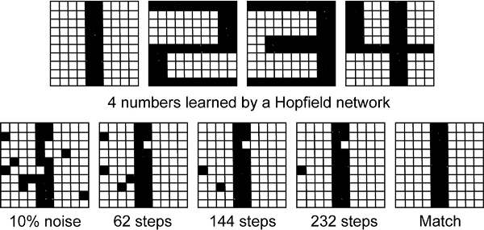

Greetings, I have the pleasure to present an implementation useful for the study of neural networks
The work is a Java implementation on a network of discrete type Hopield
A Hopfield network is a form of recurrent artificial neural network popularized by John Hopfield in 1982, but described earlier by Little in 1974. Hopfield nets serve as content-addressable memory systems with binary threshold nodes. They are guaranteed to converge to a local minimum, but convergence to a false pattern (wrong local minimum) rather than the stored pattern (expected local minimum) can occur. Hopfield networks also provide a model for understanding human memory. More info in Hopfield Network in Wikipedia
The source code was developed under the Java version 7. Development platform is Microsoft Windows 7 Professional Edition and NetBeans IDE 8.1 was used for development. Maven is used to manage the lifecycle of the project and versions
The core package has the next classes
If you want to include the library in your Java project you can do so via Maven. Define the repository comfortably Jitpack to download the library from GitHub to your project. Then add the dependency as shown in the example
<repository>
<id>jitpack.io</id>
<url>https://jitpack.io</url>
</repository>
<dependency>
<groupId>com.github.yogonza524</groupId>
<artifactId>HopfieldNetwork</artifactId>
<version>1.0</version>
</dependency>
If you decide to download the application with graphical environment (GUI ) you need to have installed the Java virtual machine . You can install it for your platform in Oracle Java Runtime Edition 7 page
Here we have a JUnit test, first we train the Hopfield network and after we test a pattern
@Test
public void hopfieldTest(){
double[] p1 = new double[]{1.0, -1.0,1.0,-1.0,1.0,-1.0,1.0,-1.0,1.0}; //for training
double[] p2 = new double[]{1.0, 1.0,1.0,-1.0,1.0,-1.0,-1.0,1.0,-1.0}; //for training
double[] p3 = new double[]{1.0, 1.0,-1.0,-1.0,1.0,-1.0,-1.0,1.0,-1.0}; //for test
ArrayList patterns = new ArrayList<>();
patterns.add(p1);
patterns.add(p2);
Hopfield h = new Hopfield(9, new StepFunction());
h.train(patterns); //train with 2 patterns
double[] result = h.test(p3);
System.out.println("\nConnections of Network: " + h.connections() + "\n");
System.out.println("Good recuperation capacity of samples: "
+ Hopfield.goodRecuperation(h.getWeights().length) + "\n");
System.out.println("Perfect recuperation capacity of samples: "
+ Hopfield.perfectRacuperation(h.getWeights().length) + "\n");
System.out.println("Energy: " + h.energy(result));
Matrix.showMatrix(h.getWeights()); //show the Weight matrix
System.out.println("\nPattern result of test");
Matrix.showVector(result); //show the result, if the pattern was not recognized then every value is equals to NaN
h.showAuxVector(); //Show the loop vector
}
After run the test we have the next results
-------------------------------------------------------
T E S T S
-------------------------------------------------------
Running HopfieldTest
Connections of Network: 72
Good recuperation capacity of samples: 1
Perfect recuperation capacity of samples: 1
Energy: -32.0
0.0 0.0 2.0 -2.0 2.0 -2.0 0.0 0.0 0.0
0.0 0.0 0.0 0.0 0.0 0.0 -2.0 2.0 -2.0
2.0 0.0 0.0 -2.0 2.0 -2.0 0.0 0.0 0.0
-2.0 0.0 -2.0 0.0 -2.0 2.0 0.0 0.0 0.0
2.0 0.0 2.0 -2.0 0.0 -2.0 0.0 0.0 0.0
-2.0 0.0 -2.0 2.0 -2.0 0.0 0.0 0.0 0.0
0.0 -2.0 0.0 0.0 0.0 0.0 0.0 -2.0 2.0
0.0 2.0 0.0 0.0 0.0 0.0 -2.0 0.0 -2.0
0.0 -2.0 0.0 0.0 0.0 0.0 2.0 -2.0 0.0
Pattern result of test
1.0 1.0 1.0 -1.0 1.0 -1.0 -1.0 1.0 -1.0
-------------------------
The auxiliar vector is empty
Tests run: 1, Failures: 0, Errors: 0, Skipped: 0, Time elapsed: 0.113 sec
Results :
Tests run: 1, Failures: 0, Errors: 0, Skipped: 0
------------------------------------------------------------------------
BUILD SUCCESS
------------------------------------------------------------------------
Total time: 2.344s
Here we have all classes used in the library
package com.core.hopfield;
import java.util.ArrayList;
import java.util.Iterator;
/**
*
* @author Gonza
*/
public class Hopfield {
private double[][] W;
private final IFunction f;
private ArrayList patterns;
private ArrayList aux;
public ArrayList getAux() {
return aux;
}
public ArrayList getPatterns() {
return patterns;
}
public Hopfield(int neurons, IFunction function) {
this.f = function;
this.W = new double[neurons][neurons];
initW();
}
private void initW(){
for (int i = 0; i < W.length; i++) {
for (int j = 0; j < W.length; j++) {
this.W[i][j] = 0.0;
}
}
}
public void train(ArrayList patterns){
this.patterns = patterns;
Iterator i = patterns.iterator();
while(i.hasNext()){
if (i.next().length != this.W.length) {
throw new IndexOutOfBoundsException("All patterns must have " + this.W.length + " dimensions");
}
}
i = patterns.iterator();
while(i.hasNext()){
double[] v = i.next();
double[][] wAux = Matrix.subtract(Matrix.multiply(v, v), Matrix.identity(this.W.length));
this.W = Matrix.add(W, wAux);
}
}
public double[] test(double[] pattern){
boolean found = false;
boolean loop = false;
if (pattern.length != this.W.length) {
throw new IndexOutOfBoundsException("The pattern doesn't have " + this.W.length + " dimensions");
}
double[] result = pattern;
aux = new ArrayList<>();
while(!found && !loop){
result = f.calculate(Matrix.multiply(W, result));
if (!this.contains(result, patterns)) {
//The result wasn't in the pattern list
if (!this.contains(result, aux)) {
//There are not loops
aux.add(result);
}
else{
loop = true; //loop found, result exists in aux list
}
}
else{
found = true; //pattern equals result, found in patterns list
}
}
if (!found) {
for (int i = 0; i < pattern.length; i++) {
result[i] = Double.NaN;
}
}
return result;
}
public double energy(double[] patterns){
double[] result = this.test(patterns);
double energy = Double.MIN_VALUE;
for (int i = 0; i < result.length; i++) {
if (result[i] == Double.NaN) {
break;
}
}
for (int i = 0; i < this.W.length; i++) {
for (int j = 0; j < this.W.length; j++) {
energy += -0.5 * this.W[i][j] * result[i] * result[j];
}
}
return energy;
}
private boolean contains(double[] pattern, ArrayList patterns){
boolean output = false;
for (int i = 0; i < patterns.size(); i++) {
if (Matrix.equals(pattern, patterns.get(i))) {
output = true;
break;
}
}
return output;
}
public void showWeights(){
Matrix.showMatrix(W);
}
public double[][] getWeights(){
return this.W;
}
public void showAuxVector(){
System.out.println("-------------------------");
if (!this.aux.isEmpty()) {
System.out.println("Auxiliar vector for loop inside the test");
for (int i = 0; i < aux.size(); i++) {
System.out.println("Iteration " + i);
Matrix.showVector(aux.get(i));
}
}
else{
System.out.println("The auxiliar vector is empty");
}
}
public String getAuxVector(){
String result = "-------------------------\n";
if (this.aux != null &&!this.aux.isEmpty()) {
result += "Auxiliar vector for loop inside the test\n";
for (int i = 0; i < aux.size(); i++) {
result += "Iteration " + i + ": \t";
result += Matrix.getVector(aux.get(i)) + "\n";
}
}
else{
result += "The auxiliar vector is empty";
}
return result;
}
public static int goodRecuperation(int neurons){
return (int)(0.138 * neurons);
}
public static int perfectRacuperation(int neurons){
return (int)(neurons / (4 * Math.log(neurons)));
}
public int connections(){
return this.W.length * (this.W.length - 1);
}
}
package com.core.hopfield;
/**
*
* @author Gonza
*/
public interface IFunction {
public double[] calculate(double[] net);
}
package com.core.hopfield;
/**
*
* @author Gonza
*/
public class Matrix {
// return a random m-by-n matrix with values between 0 and 1
public static double[][] random(int m, int n) {
double[][] C = new double[m][n];
for (int i = 0; i < m; i++)
for (int j = 0; j < n; j++)
C[i][j] = Math.random();
return C;
}
// return n-by-n identity matrix I
public static double[][] identity(int n) {
double[][] I = new double[n][n];
for (int i = 0; i < n; i++)
I[i][i] = 1;
return I;
}
// return x^T y
public static double dot(double[] x, double[] y) {
if (x.length != y.length) throw new RuntimeException("Illegal vector dimensions.");
double sum = 0.0;
for (int i = 0; i < x.length; i++)
sum += x[i] * y[i];
return sum;
}
// return C = A^T
public static double[][] transpose(double[][] A) {
int m = A.length;
int n = A[0].length;
double[][] C = new double[n][m];
for (int i = 0; i < m; i++)
for (int j = 0; j < n; j++)
C[j][i] = A[i][j];
return C;
}
// return C = A + B
public static double[][] add(double[][] A, double[][] B) {
int m = A.length;
int n = A[0].length;
double[][] C = new double[m][n];
for (int i = 0; i < m; i++)
for (int j = 0; j < n; j++)
C[i][j] = A[i][j] + B[i][j];
return C;
}
// return C = A - B
public static double[][] subtract(double[][] A, double[][] B) {
int m = A.length;
int n = A[0].length;
double[][] C = new double[m][n];
for (int i = 0; i < m; i++)
for (int j = 0; j < n; j++)
C[i][j] = A[i][j] - B[i][j];
return C;
}
// return C = A * B
public static double[][] multiply(double[][] A, double[][] B) {
int mA = A.length;
int nA = A[0].length;
int mB = B.length;
int nB = B[0].length;
if (nA != mB) throw new RuntimeException("Illegal matrix dimensions.");
double[][] C = new double[mA][nB];
for (int i = 0; i < mA; i++)
for (int j = 0; j < nB; j++)
for (int k = 0; k < nA; k++)
C[i][j] += A[i][k] * B[k][j];
return C;
}
// matrix-vector multiplication (y = A * x)
public static double[] multiply(double[][] A, double[] x) {
int m = A.length;
int n = A[0].length;
if (x.length != n) throw new RuntimeException("Illegal matrix dimensions.");
double[] y = new double[m];
for (int i = 0; i < m; i++)
for (int j = 0; j < n; j++)
y[i] += A[i][j] * x[j];
return y;
}
// vector-matrix multiplication (y = x^T A)
public static double[] multiply(double[] x, double[][] A) {
int m = A.length;
int n = A[0].length;
if (x.length != m) throw new RuntimeException("Illegal matrix dimensions.");
double[] y = new double[n];
for (int j = 0; j < n; j++)
for (int i = 0; i < m; i++)
y[j] += A[i][j] * x[i];
return y;
}
//vector-vector multiplication (S = a * b)
public static double[][] multiply(double[] column, double[] row){
int columns = column.length;
int rows = row.length;
double[][] output = new double[columns][rows];
for (int i = 0; i < rows; i++) {
for (int j = 0; j < columns; j++) {
output[i][j] = column[i] * row[j];
}
}
return output;
}
//show all vector components
public static void showVector(double[] values){
for (int i = 0; i < values.length - 1; i++) {
System.out.print(values[i] + "\t");
}
System.out.println(values[values.length - 1]);
}
//show all matrix components
public static void showMatrix(double[][] values){
for (int i = 0; i < values.length; i++) {
showVector(values[i]);
}
}
public static String getVector(double[] values){
String result = "";
for (int i = 0; i < values.length - 1; i++) {
result += values[i] + "\t\t";
}
result += values[values.length - 1];
return result;
}
public static String getMatrix(double[][] values){
String result = "";
for (int i = 0; i < values.length; i++) {
result += Matrix.getVector(values[i]) + "\n";
}
return result;
}
public static boolean equals(double[] a, double[] b){
if (a == null) {
throw new NullPointerException("first vector is null");
}
if (b == null) {
throw new NullPointerException("second vector is null");
}
if (a.length != b.length) {
throw new NullPointerException("Both vectors have differents dimensions");
}
boolean result = true;
for (int i = 0; i < a.length; i++) {
if (a[i] != b[i]) {
result = false;
break;
}
}
return result;
}
}
package com.core.hopfield;
/**
*
* @author Gonza
*/
public class StepFunction implements IFunction{
/**
* Return an array pattern for a single array
* @param net value to evaluate
* @return an array with 1 if net >= 0 or (exclusive) -1 if net < 0
*/
@Override
public double[] calculate(double[] net) {
double[] output = new double[net.length];
for (int i = 0; i < net.length; i++) {
output[i] = net[i] >= 0? 1.0 : -1.0;
}
return output;
}
}